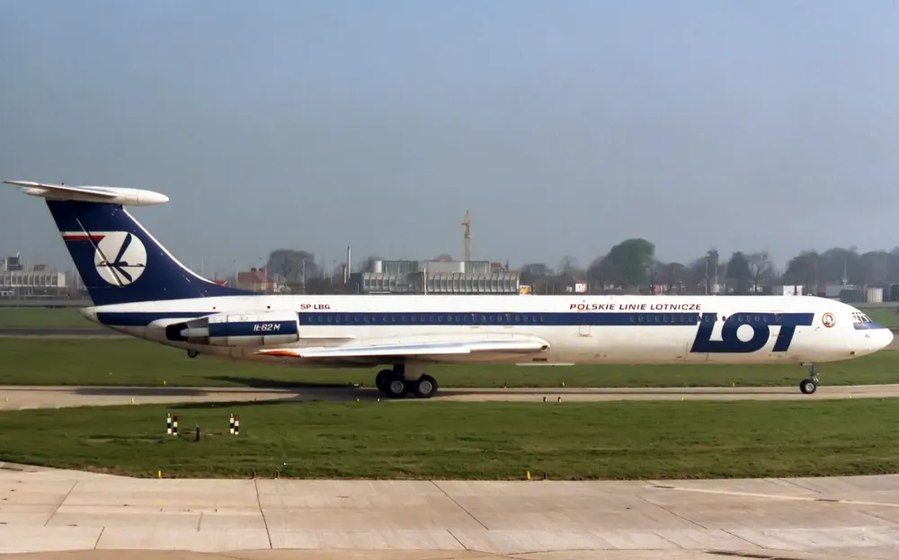

우리가 기억해야할 항공사고 모음(유럽편)
1.LOT polish airlines flight 5055 (롯 폴란드 항공 5055편)

1987년 5월 9일, 폴란드 마조비에츠키에 바르샤바 쇼팽 국제공항에서 한 비행기가 이륙한다.
비행기 편명은 5055편, 목적지는 미국 케네디 국제공항이다. 비행기 기종은 일류신 Il-62M.
운영 항공사: LOT polish airlines flight 5055. 승객,승무원은 183명이 탑승해있다.
5055편은 이륙한 후, 18,000피트로 상승하기 위해 엔진 최대 출력을 이용했다.